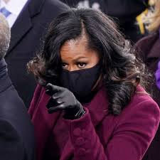
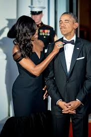

As a kid, I had no perspective on whether the facilities were run-down or whether it mattered that there were hardly any white kids left. The school ran from kindergarten all the way through eighth grade, which meant that by the time I have reached the upper grades, I knew every light switch, every chalkboard and cracked patch of hallway. I knew nearly every teacher and most of the kids. For me, Bryn Mawr was practically an extension of home.
There was a clear sense that the school had invested in us, which I think made us all try harder and feel better about ourselves. The independent learning setup only served to fuel my competitive streak. I tore through the lessons, quietly keeping tabs on where I stood among my peers as we charted our progress from long division to pre-algebra, from writing single paragraphs to turning in full research papers. For me, it was like a game.
 